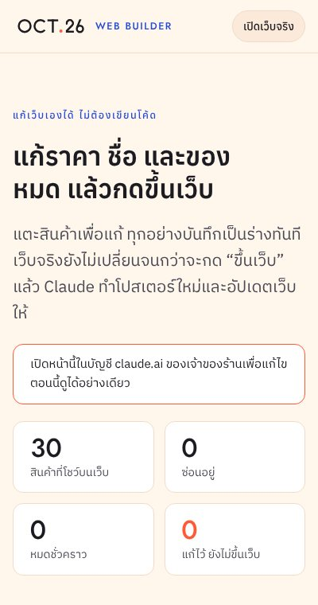
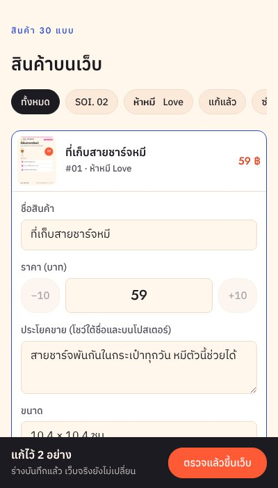

หน้าแก้เว็บสำหรับเจ้าของร้าน แก้ราคา ชื่อ ประโยคขาย ซ่อนสินค้า บอกว่าของหมด และวันปิดประกาศออกบูธ จากมือถือ โดยไม่ต้องเขียนโค้ด
เปิด Web Builder

รวมงานนี้เข้า main หนึ่งครั้ง ตอนนี้งานอยู่ในกิ่ง claude/funny-tesla-4dkwm7 ปุ่มขึ้นเว็บเปิด Claude บน main จึงต้องมีไฟล์ชุดนี้ก่อน บอก Claude ว่า “รวมเข้า main” หรือเปิด PR แล้วกด Merge
ครั้งแรกที่กดขึ้นเว็บ claude.ai จะขอให้อนุญาตหน้านี้ใช้ Claude Code Remote กดอนุญาตครั้งเดียว
website/builder/index.html หน้า Web Builder (สร้างจาก build.py)website/builder/apply.py ตรวจค่าที่แก้ แล้วแก้ brand.py กับ website/build.py ทำโปสเตอร์และเว็บใหม่website/builder/APPLY.md ขั้นตอนที่ Claude ทำเมื่อกดขึ้นเว็บwebsite/builder/live.json ค่าที่เว็บโชว์ตอนนี้website/build.py เพิ่มป้าย “หมดชั่วคราว” (ชุด SOLD) บนหน้าแรกและหน้าสินค้าwebsite/builder/site/ หน้าสรุปนี้